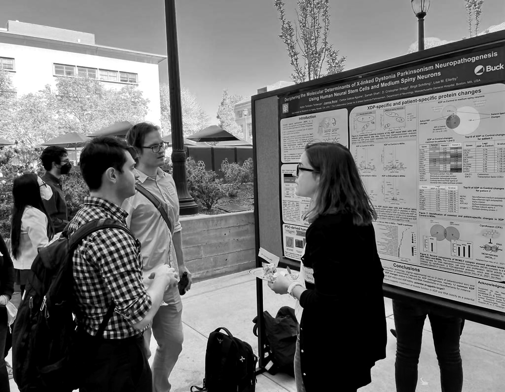

Strategic advisory for biotech founders and investors. Expert guidance in longevity, clinical development, and fundraising.
Services



"I bring a PhD from Wayne State University, a Postdoc from the Buck Institute and the perspective of an active VC Associate to your strategy. This means your science gets investor-grade due diligence from day one. — Jordan B. Burton, Ph.D."
AboutExpert fundraising and strategic guidance for biotech founders and investors. Navigate clinical development, technical diligence, and investment with confidence in longevity and life sciences.
For Founders: Schedule a consultation to discuss your fundraising strategy, scientific postioning, and next critical milestones.
For Investors: Leverage PhD-level expertise for deep scientific assessment of therapeutic platforms and clinical programs.
ContactGet clear, practical guidance on my advisory services, fundraising support, and how I help life sciences startups and investors.